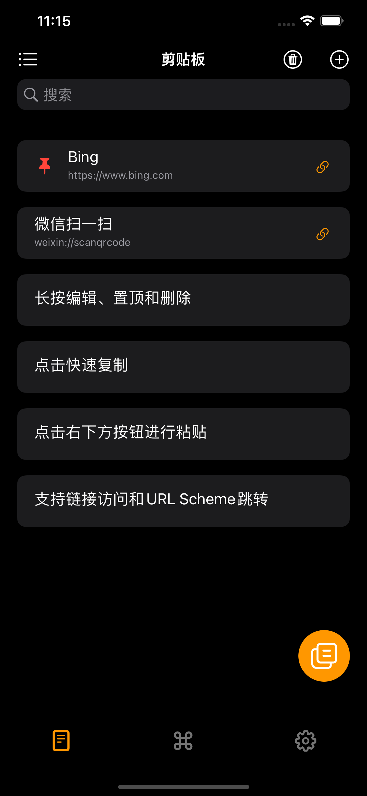

hi@iyu.app
剪贴板扩展
Yu是一款在iPhone和iPad上运行的剪贴板扩展App，支持对文本的快速复制和保存。Yu还是一个键盘，可以更加方便的输入保存的信息。Yu还添加了对URL Scheme的支持，可以方便的跳转到其他App


Yu是一款在iPhone和iPad上运行的剪贴板扩展App，支持对文本的快速复制和保存。Yu还是一个键盘，可以更加方便的输入保存的信息。Yu还添加了对URL Scheme的支持，可以方便的跳转到其他App